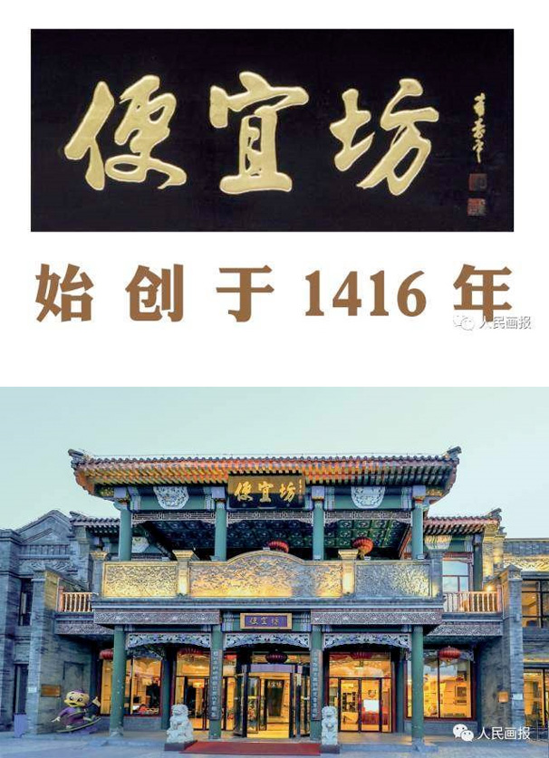

原汁原味 不能错过的北京老字号，不能错过
来源：人民画报
中华美食，享誉世界；
各地佳肴，汇聚北京。
老字号餐饮不仅是京味文化的名片，也让这座城市变得有滋有味、活色生香。而老字号的每一道菜肴，都承载着历史、乡情、风俗和文化，是人们心头无尽的回味，亲切、自然而优雅。
便宜坊始创于1416 年，从一个南方人搭起的一间摊档起步，经过数十代人的传承，逐渐扬名京城，是历史悠久的老字号餐饮企业。历经 600 余年的发展，便宜坊形成了以北京填鸭为原料，以焖炉烤鸭为龙头产品，以鲁菜为基础的菜品特色。因焖炉烤鸭在烤制过程中不见明火、绿色环保，所以被现代人称为“绿色烤鸭”。目前，便宜坊焖炉烤鸭技艺已入选“国家级非物质文化遗产名录”。为丰富核心产品，便宜坊还创新研制出了“花香酥”和“蔬香酥”专利烤鸭，并根据节令，推出了 24 节气特色菜品，挖掘恢复了传统名菜清酱肉、桶子鸡等，让中国传统饮食文化深入人心。